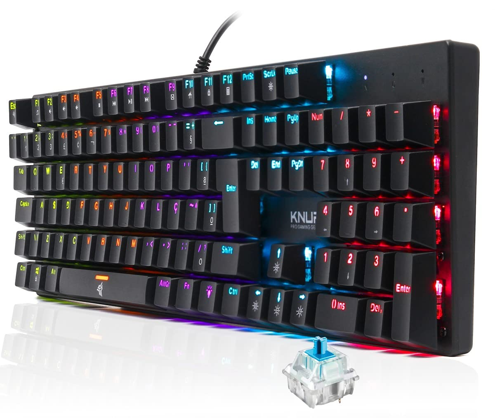
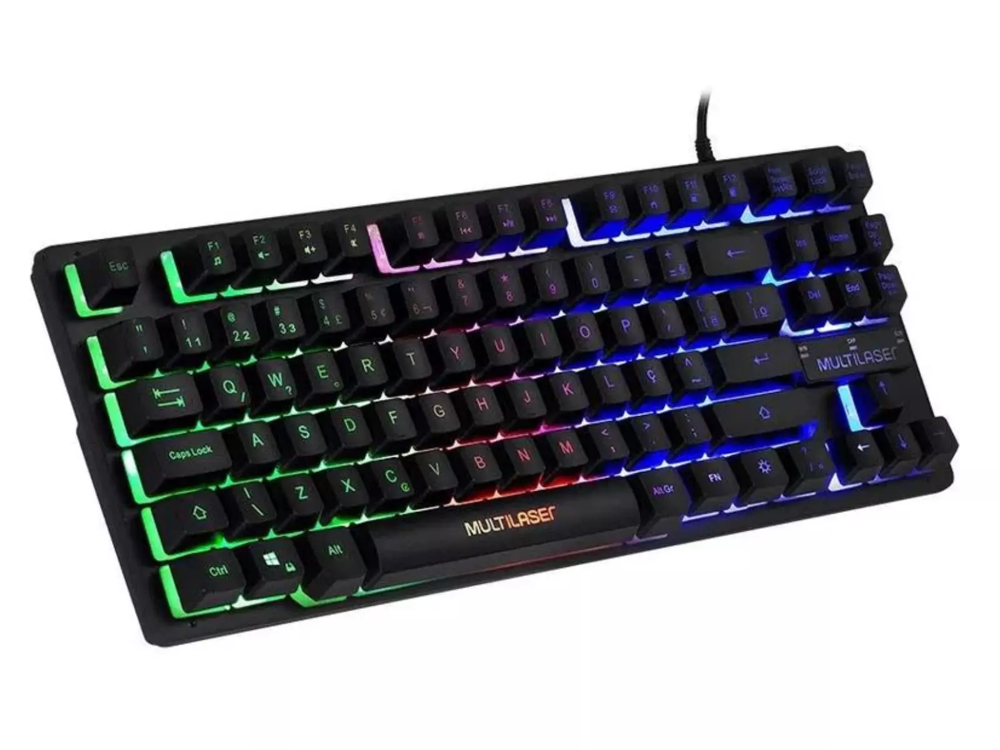
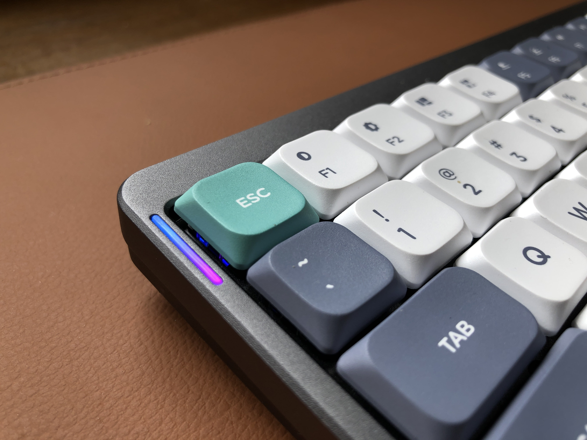
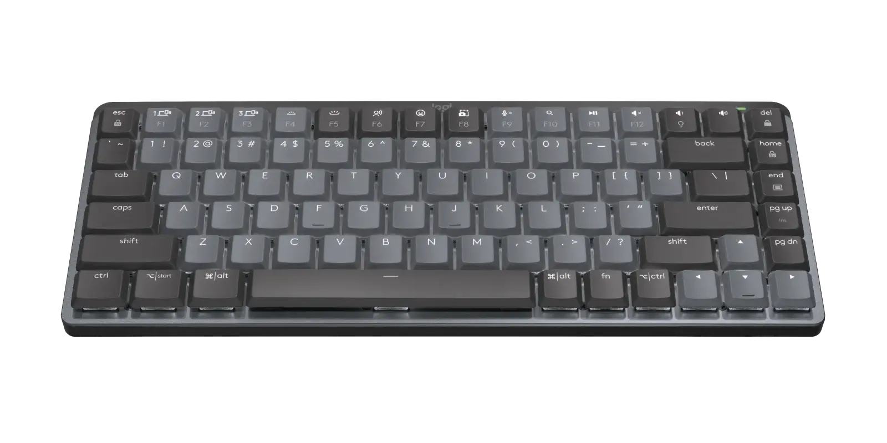

O que é um teclado?
O teclado é o principal dispositivo de entrada utilizado para interagir com o computador. Ele permite digitar comandos, textos e ativar funções através de teclas físicas ou virtuais.

Tipos de teclado

Mecânico
Switches individuais por tecla, maior durabilidade e feedback tátil.

Membrana
Mais silencioso e econômico, comum em escritórios e uso doméstico.

Low-profile
Teclas mais baixas, digitação rápida e design compacto.

Sem fio
Liberdade de movimentos via Bluetooth ou receptor USB.